Przydatne linki
Układ okresowy pierwiastkówWykaż, że istnieje parametr 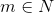, dla którego ciąg o wyrazach 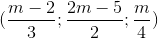 jest ciągiem geometrycznym o niezerowych wyrazach.
Ciąg
 jest jednocześnie ciągiem artymetycznym i geometrycznym. Wykaż, że wszystkie wyrazy tego ciągu są równe.
jest jednocześnie ciągiem artymetycznym i geometrycznym. Wykaż, że wszystkie wyrazy tego ciągu są równe. Dany jest ciąg geometryczny
Dany jest ciąg geometryczny  , którego wszystkie wyrazy są dodatnie. Wykaż, że prawdziwe jest równanie 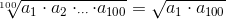.
, którego wszystkie wyrazy są dodatnie. Wykaż, że prawdziwe jest równanie 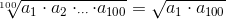.Dany jest ciąg arytmetyczny o wzorze ogólnym 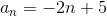 określonym dla
 . Wykaż, że suma
. Wykaż, że suma 
 początkowych wyrazów tego ciągu wynosi
początkowych wyrazów tego ciągu wynosi  .
.- Wiedząc, że
 jest ciągiem geometrycznym, wykaż, że prawdziwa jest zależność
jest ciągiem geometrycznym, wykaż, że prawdziwa jest zależność  , gdzie jest sumą początkowych wyrazów ciągu .
, gdzie jest sumą początkowych wyrazów ciągu . - Dana jest suma początkowych wyrazów ciągu określona wzorem 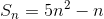. Wykaż, że ciąg jest ciągiem arytmetycznym.
- Dana jest suma początkowych wyrazów ciągu określona wzorem 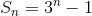. Wykaż, że ciąg ten jest geometryczny.
- Wykaż, że jeżeli ciąg jest ciągiem arytmetycznym, to ciąg
 określonej wzorem 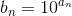 jest ciągiem geometrycznym.
określonej wzorem 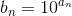 jest ciągiem geometrycznym. - Dany jest wielomian 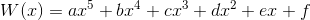, gdzie współczynniki 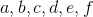 są kolejnymi wyrazami ciągu geometrycznego o ilorazie różnym od zera. Wykaż, że równanie
 ma dokładnie jedno rozwiązanie.
ma dokładnie jedno rozwiązanie. Kolejne kąty czworokąta wpisanego w okrąg są kolejnymi wyrazami ciągu artymetycznego. Wykaż, że czworokąt jest trapezem.
Wykaż, że istnieje liczba
 taka, że ciąg o wyrazach
taka, że ciąg o wyrazach  jest ciągiem geometrycznym.
jest ciągiem geometrycznym.Wiedząc, że liczby 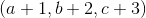 są kolejnymi wyrazami ciągu arytmetycznego, a liczby
 kolejnymi wyrazami ciągu geometrycznego, wykaż, że 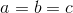.
kolejnymi wyrazami ciągu geometrycznego, wykaż, że 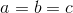.- Wiedząc, że liczby
 są kolejnymi niezerowymi wyrazami ciągu geometrycznego, uzasadnij, że
są kolejnymi niezerowymi wyrazami ciągu geometrycznego, uzasadnij, że  .
. Dany jest ciąg arytmetyczny o wzorze
 . Wykaż, że suma początkowych wyrazów tego ciągu wynosi
. Wykaż, że suma początkowych wyrazów tego ciągu wynosi  dla
dla  .
.- Wiedząc, że jest ciągiem arytmetycznym, wykaż, że
 , gdzie jest sumą początkowych wyrazów tego ciągu.
, gdzie jest sumą początkowych wyrazów tego ciągu. - Dana jest suma początkowych wyrazów ciągu określona wzorem
 . Wykaż, że ciąg jest arytmetyczny.
. Wykaż, że ciąg jest arytmetyczny. - Dana jest suma początkowych wyrazów ciągu określona wzorem
 . Wykaż, że ciąg jest geometryczny.
. Wykaż, że ciąg jest geometryczny. - Wykaż, że jeżeli ciąg jest geomertyczny, to ciąg określony wzorem
 jest ciągiem arytmetycznym.
jest ciągiem arytmetycznym. - Dany jest wielomian
 , gdzie współczynniki
, gdzie współczynniki  są kolejnymi wyrazami ciągu geometrycznego o ilorazie różnym od zera. Wykaż, że wielomian 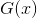 ma dokładnie jedno rozwiązanie.
są kolejnymi wyrazami ciągu geometrycznego o ilorazie różnym od zera. Wykaż, że wielomian 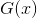 ma dokładnie jedno rozwiązanie. Kolejne długości boków czworokąta opisanego na okręgu są kolejnymi wyrazami ciągu geometrycznego. Wykaż, że ten czworokąt jest rombem.
Zadania powtórzeniowe
 jest liczbą naturalną.
jest liczbą naturalną. oraz
oraz  równanie 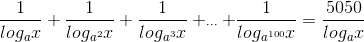 jest prawdziwe.
równanie 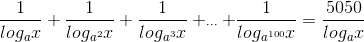 jest prawdziwe. ciąg 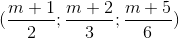 jest ciągiem artymetycznym.
ciąg 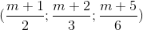 jest ciągiem artymetycznym. , wykaż, że
, wykaż, że  .
. jest kwadratem liczby naturalnej.
jest kwadratem liczby naturalnej. .
.